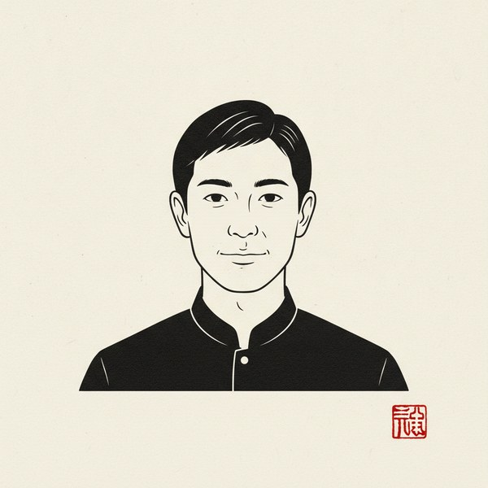

律のこと
霊感はない。カードも引かない。
使うのは、彼の生年月日の数と星座。それと、男として分かる「男がそう言うとき、何をしているか」。
女の人は、言葉のほうを信じたがる。
男は、予定のほうに本音が出る。
「忙しい」が本当に忙しいのか、優先順位が下がったのか。
数と行動で、だいたい分かる。
決めるのはあなた。
俺は、男の側から翻訳するだけ。

男は、言葉より
予定に本音が出る。
「忙しい」「落ち着いたら」「離婚する」。
その言葉を、男の側から翻訳する。
根拠は、彼の生年月日の数と星座。霊感はない。
LINEを友だち追加すると、聞くことが4つ届く
霊感はない。カードも引かない。
使うのは、彼の生年月日の数と星座。それと、男として分かる「男がそう言うとき、何をしているか」。
女の人は、言葉のほうを信じたがる。
男は、予定のほうに本音が出る。
「忙しい」が本当に忙しいのか、優先順位が下がったのか。
数と行動で、だいたい分かる。
決めるのはあなた。
俺は、男の側から翻訳するだけ。
ひとつでも当てはまるなら、
翻訳しに来てほしい。
「忙しい」が本当に忙しいのか、順番が下がったのか。彼の数と星座で、黙る理由が変わる。
彼の言ったことと、彼が実際にした行動を並べて、本気の度合いを読む。
あなたが「待つ席」に座ってしまう理由を、数から1つ。
「いつ？」の代わりに、男が予定表を開く聞き方をひとつ。
下のボタンから。律の公式LINE。
あなたの生年月日／彼の生年月日（分かれば）／今の関係と流れ（引っかかっている彼の言葉があれば、そのまま）／いちばん知りたいこと。
届いた順に読む。遅くとも3日のうちには返す。
LINEのトークに届く。落ち着いて読んでほしい。